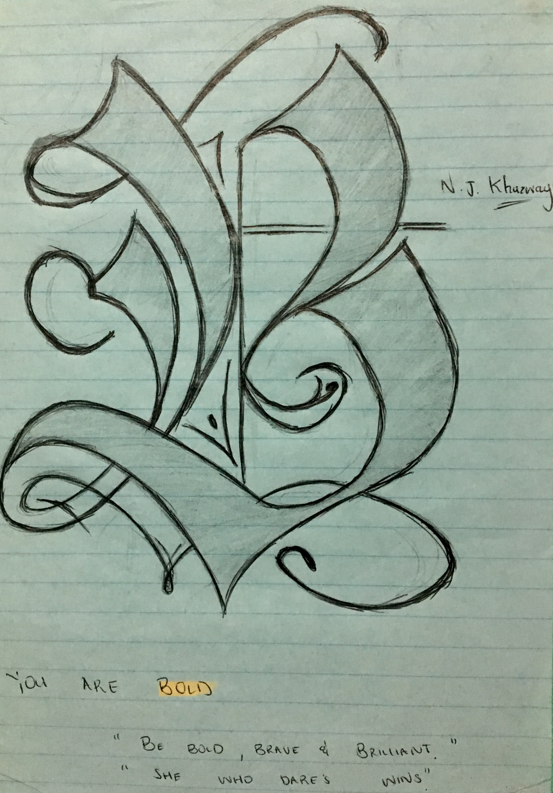
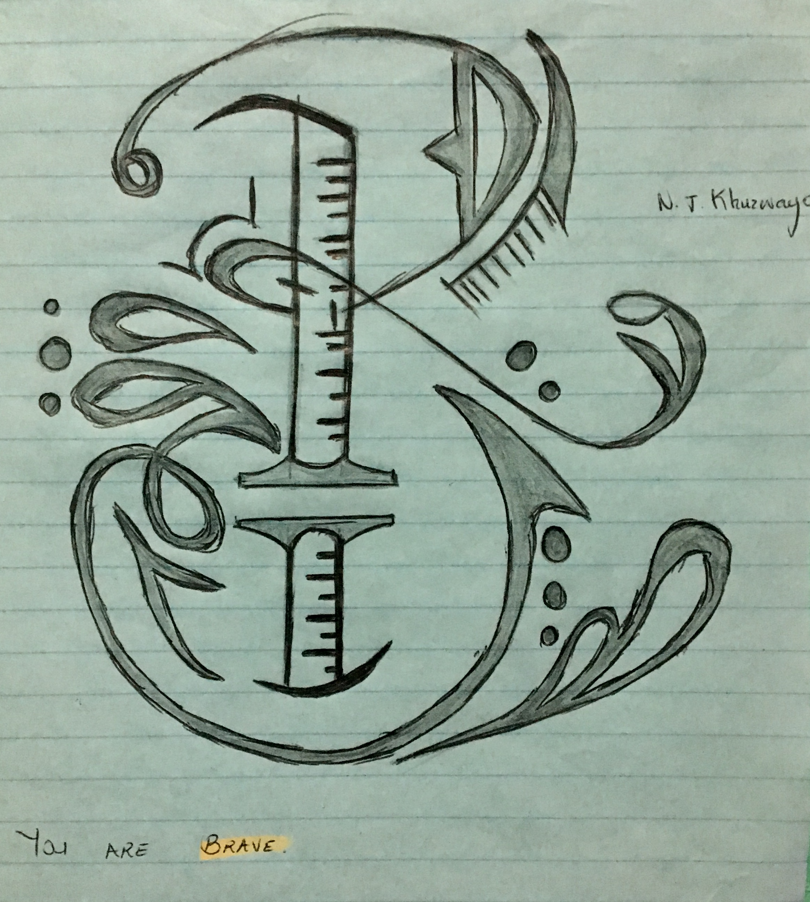
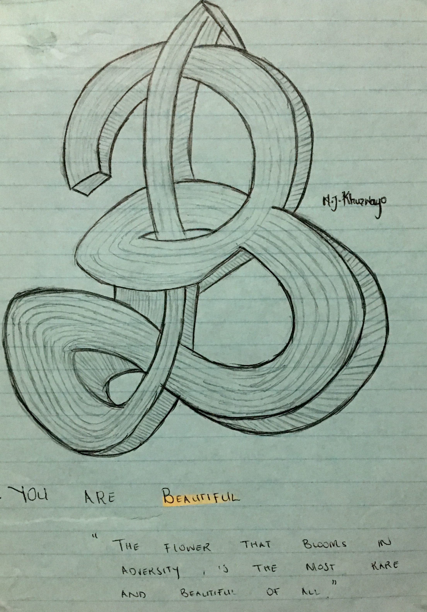
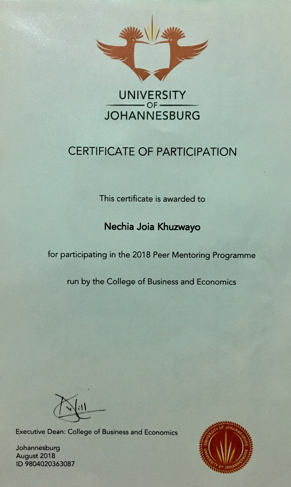

My Work:
I consider myself a hybrid, because I do a lot of stuff and as much as I might not be that perfect on some of the stuff that I do, I know that at least I can start and finish something.
Below I have included some of the rough sketches that I do on my extra time.I have always loved drawing and when ever I get a chance, I grab a pen; paper; pencil and get straight to it. I do mostly graphics and anything else that comes in mind.



Through my university years I conducted some research and had to compile a dissertation for Information Management and they were based on Competetive Intelligence and Scenarios and by compiling them I was able to identify what is the difference between having information and relevant information, and below I have uploaded some documents. NB* Please click on the underlined words below to access the dissertations*
Competetive Inteligence Research Report
Scenarios
I am also a mentor, I was one of the peer mentors at UJ, since I am more corncerned about other people and I love offering help when needed and at times you mightjust be the missing puzzle in someones life.

I am also a UX Strategist at Umuzi and in a group of seven we were asked to make umuzi better through Social Capital and below I have included a portfolio of Making Umuzi Better. I am still going to do more work and I will upload more as time goes.
Make Umuzi Better Portfolio